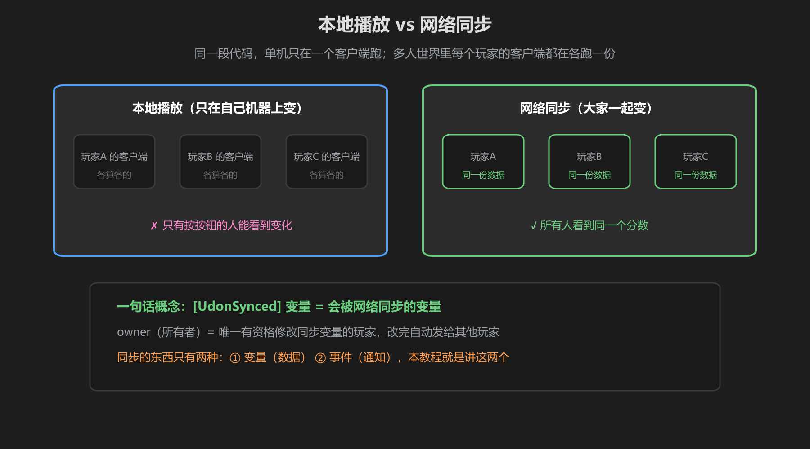
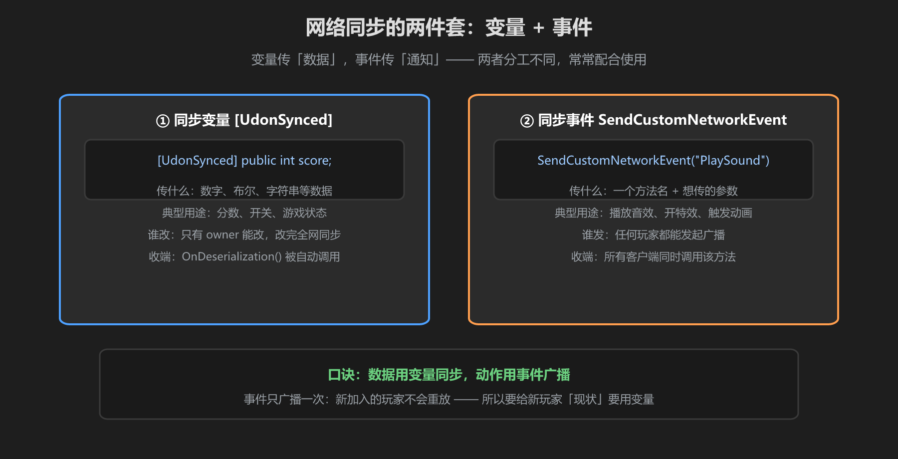

第 1 篇：为什么要网络同步 — 本地 vs 同步、变量与事件
单机游戏里，代码在一台机器上跑，变量改了就改了。但 VRChat 世界里，每个玩家的客户端都在各跑一份代码 —— 你改的变量只在你自己的机器上变，别人根本不知道。网络同步就是解决「如何让大家看到同一份数据」。
1. 本地播放 vs 网络同步

图：本地播放各算各的；网络同步大家看到同一份数据
举个例子：你写了一句 score = 10;。在本地模式下，只有你自己看到分数变成 10，其他玩家的计分板还是 0。这不是 bug，而是数据没有同步。
给变量加上 [UdonSynced] 属性后，修改会自动广播：你的 10 会通过网络发出去，所有客户端收到后把本地的分数覆盖成 10。
[UdonSynced] 一句话概念：被它标记的变量 = 「会被网络同步的变量」。你改，全网跟着改；它负责数据的一致性。
2. owner（所有者）：谁有资格改
如果所有人都能改同一个同步变量，就会互相覆盖、乱套。所以 VRChat 规定：每个同步变量只有一个 owner（所有者），只有 owner 能修改它。其他玩家只能读，想改得先「请求所有权」（第 4 篇讲）。
3. 同步的两样东西：变量和事件

图：变量传「数据」，事件传「通知」，两者分工不同
| 同步方式 | 传什么 | 典型用途 |
|---|---|---|
| 同步变量 [UdonSynced] | 数据（分数、开关、状态） | 计分板、游戏状态 |
| 同步事件 SendCustomNetworkEvent | 一个方法名（通知） | 音效、特效、动画 |
口诀：数据用变量同步，动作用事件广播。本教程第 2 篇讲变量，第 3 篇讲事件。
学前检查清单
- 理解了「本地 vs 网络同步」的区别
- 能说出 [UdonSynced] 的一句话概念
- 知道 owner 是「唯一能改同步变量的玩家」
- 能区分「同步变量」和「同步事件」的用途